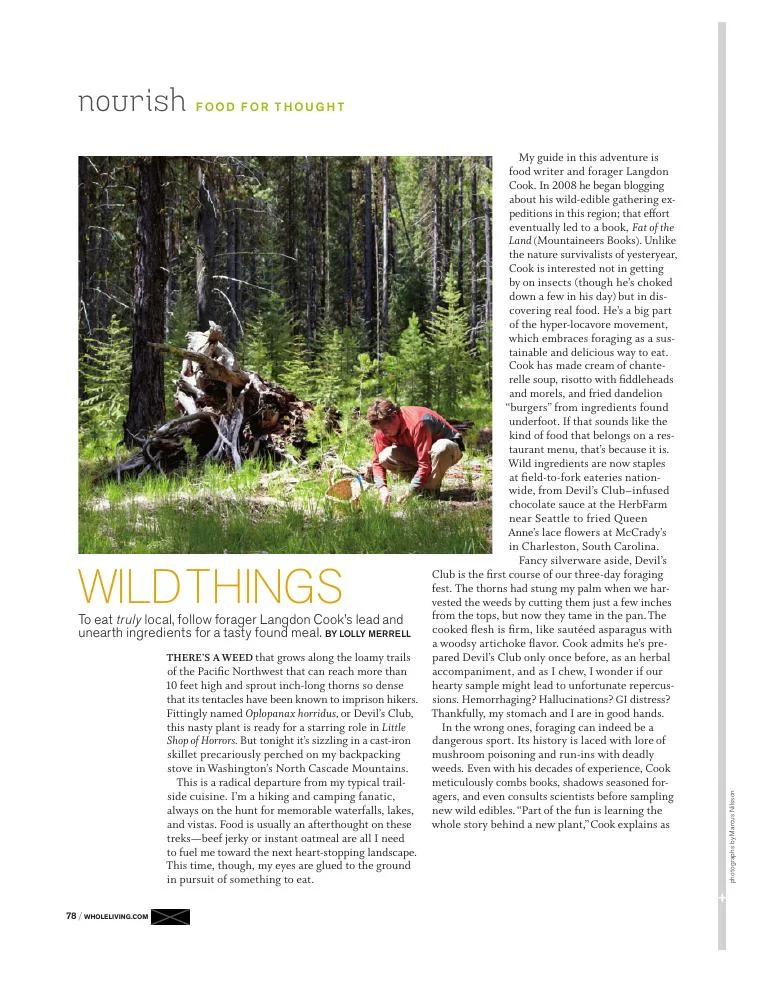

Wild Things

Foraging with food writer Langdon Cook in Washington’s North Cascade Mountains, where a trailside meal begins with a closer look at the forest floor.
View PDF here »PDF · 1.4 MB← Back to Profiles
Foraging with food writer Langdon Cook in Washington’s North Cascade Mountains, where a trailside meal begins with a closer look at the forest floor.
View PDF here »PDF · 1.4 MB← Back to Profiles